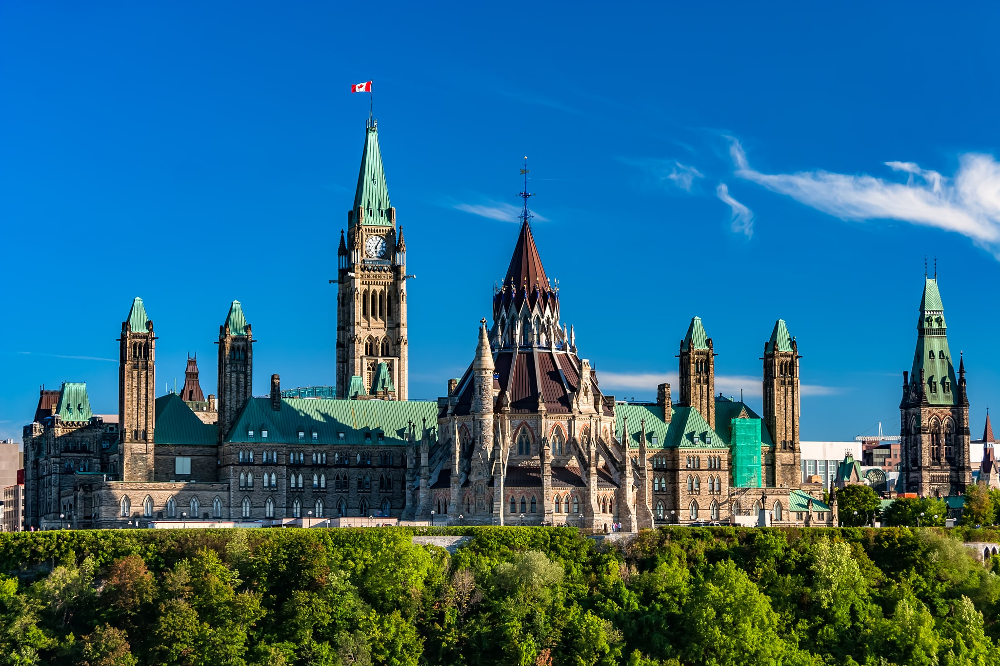

Canada is a dream destination for students passionate about travel, culture, and history, offering iconic landmarks that enhance the experience.
The breathtaking Banff National Park, known for its stunning mountain landscapes and crystal-clear lakes, provides an inspiring setting for students interested in nature and adventure.
Exploring this UNESCO World Heritage site allows visitors to witness the beauty of the Canadian Rockies while gaining a deeper appreciation for environmental conservation and wildlife.

Meanwhile, the city of Ottawa, home to Canada’s Parliament Hill and national museums, represents the country’s significance in governance and history.
Much like the evolution of democracy, Ottawa blends tradition with modernity, making it a perfect place for students to explore political science, Canadian history, and cultural diversity.
The iconic Rideau Canal, which transforms into the world’s largest skating rink in winter, offers students a unique and picturesque way to experience the city’s charm.

For those who admire art and urban culture, a visit to Toronto’s CN Tower creates a tangible connection to Canada’s vibrant city life.
This architectural marvel offers breathtaking views of the city skyline and serves as a symbol of Canadian innovation.
The surrounding Entertainment District, with its theaters, museums, and bustling nightlife, provides an ideal space for students to engage with Canada’s artistic and multicultural scene.

{kind=link}
{kind=link}
{kind=link}